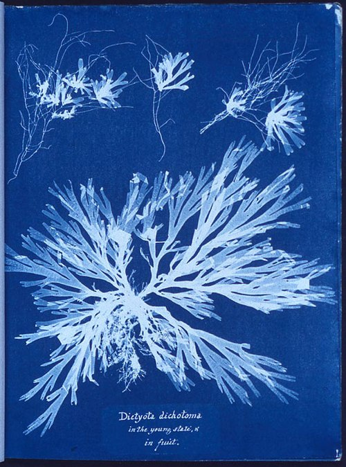
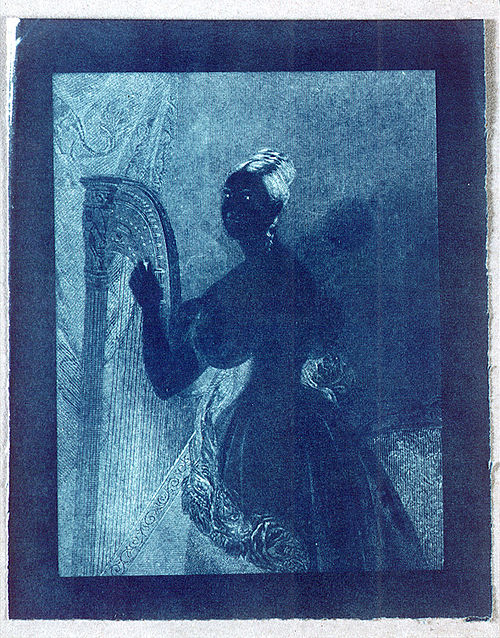

The cyanotype (from Ancient Greek: κυάνεος, kyáneos 'dark blue' and τύπος, týpos 'mark, impression, type') is a slow-reacting, photographic printing formulation sensitive to a limited near-ultraviolet and blue light spectrum, the range 300 nm to 400 nm known as UVA radiation.[1] It produces a monochrome, blue-coloured print on a range of supports, and is often used for art and reprography in the form of blueprints. For any purpose, the process usually uses two chemicals - ferric ammonium citrate or ferric ammonium oxalate, and potassium ferricyanide, and only water to develop and fix. Announced in 1842, it is still in use.

A cyanotype of algae by 19th century botanist Anna Atkins